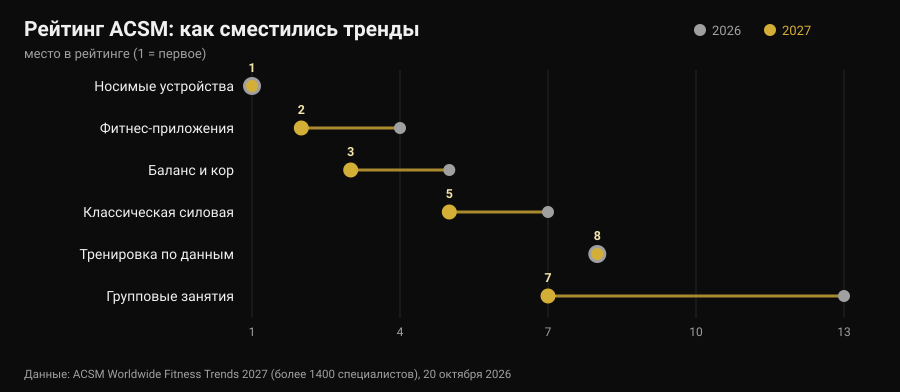
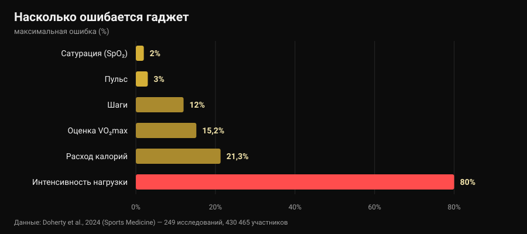

Фитнес-тренды 2027: что работает на самом деле
20 октября American College of Sports Medicine опубликовал рейтинг фитнес-трендов на 2027 год, и за неделю он разошёлся по всем отраслевым сайтам. В десятый раз на первом месте носимые устройства; приложения для тренировок поднимаются с четвёртого места на второе. Ни один из прочитанных мной материалов не задал следующий вопрос: а эти тренды работают? Я пошёл искать цифры — и оказалось, что инструменты на вершине рейтинга одно делают прекрасно, а другое очень плохо. В том числе то число, на которое почти все смотрят первым.

Коротко
- Рейтинг не измеряет эффективность. Это опрос более 1400 специалистов отрасли о том, что будет значить больше всего в 2027 году, уже 21-й по счёту. Он показывает, куда идёт рынок, а не что даёт результат.
- Трекеры действительно заставляют двигаться больше, и это надёжно. Обзор 39 систематических обзоров (163 992 участника) оценивает прибавку примерно в 1800 шагов в день, 40 минут ходьбы и около 1 кг веса (Ferguson et al., 2022).
- Калории на экране — самое ненадёжное число. Ошибка в расходе энергии составляет от -21,3% до +14,8%, а в интенсивности нагрузки средняя ошибка доходит до 80% (Doherty et al., 2024).
- А вот пульс хорош. Средняя систематическая ошибка ±3%. Расчётный VO₂max — нет: завышен на 15,2% в покое.
- «На основе данных» не значит «лучше». Тренировки по вариабельности сердечного ритма улучшают вагусные показатели (SMD 0,50), но не улучшают результат значимо (Manresa-Rocamora et al., 2021).
Рейтинг 2027 в трёх строках
Каждый год ACSM рассылает анкету фитнес-специалистам по всему миру и спрашивает, какие тренды будут весомее всего в ближайшие двенадцать месяцев. Выпуск 2027 года, подготовленный Cayla R. McAvoy и рабочей группой по трендам, собрал более 1400 ответов. Во главе списка:
- носимые технологии (первое место в десятый раз);
- приложения для тренировок (с четвёртого);
- баланс, подвижность и кор (с пятого);
- программы для людей старшего возраста (в первой пятёрке пятый год подряд);
- классический силовой тренинг (поднялся на две позиции);
- упражнения для контроля веса;
- групповые занятия (с тринадцатого);
- технологии на основе данных (остаются на восьмом);
- упражнения для психического здоровья (в первой десятке четвёртый год);
- программы с инфлюенсерами и амбассадорами (вернулись после выпадения из первой двадцатки).

Самый большой скачок — у групповых занятий, шесть позиций за год. Но интереснее другое: из десяти пунктов три — это технологии, а два — обычный классический тренинг. Именно это соседство стоит рассмотреть внимательно, потому что исследования про две половины говорят очень разное.
Уточнение, которого нет почти ни в одной перепечатке: опрос мнений специалистов не является доказательством эффективности. Это термометр рынка. Если в 2027 году все будут продавать данные, уместный вопрос — насколько эти данные точны.
Что часы измеряют хорошо, а что оценивают приблизительно
Здесь есть почти идеальный источник: «живой» зонтичный обзор в журнале Sports Medicine, который свёл вместе 24 систематических обзора, 249 валидационных исследований и 430 465 участников, сравнивая потребительские устройства с лабораторными эталонами (Doherty et al., 2024).

Слева направо график описывает чёткую иерархию.
Надёжно. У пульса средняя ошибка 3%: более чем достаточно, чтобы регулировать интенсивность бега или круговой тренировки. В выявлении аритмий устройства показывают чувствительность 100% и специфичность 95% — цифра впечатляющая, но это по-прежнему повод пойти к врачу, а не диагноз.
Приблизительно, но полезно. Шаги обычно занижаются, средняя абсолютная процентная ошибка от -9% до 12%. В переводе: если часы показывают 8000 шагов, ваши реальные — примерно между 7000 и 8800. Для недельного тренда отлично; для выводов по одному дню — нет.
Не для решений. У расхода энергии ошибка от -21,3% до +14,8%. На тренировке, которую экран оценивает в 600 ккал, истинное значение может лежать между 470 и 690. Ещё хуже с интенсивностью нагрузки: средняя ошибка от 29% до 80% в зависимости от того, насколько тяжёлая работа. Расчётный VO₂max завышен на 15,24% в покое и на 9,83% при нагрузке: если часы показывают 52, правдоподобное число ближе к 47.
А сон? Устройства склонны завышать общее время сна, ошибка обычно больше 10%: на практике они считают сном периоды, когда вы просто лежали неподвижно. Для того чтобы заметить, что вы легли позже обычного, этого хватает — а это и есть суть вопроса о том, когда пить последний кофе, — но «оценка сна» не является клиническим измерением.
Последняя цифра расставляет всё по местам: из всех устройств на рынке лишь около 11% прошли валидацию хотя бы по одному показателю, а выполненные валидационные исследования составляют 3,5% от необходимых. Когда производитель пишет на коробке «клиническая точность», в девяти случаях из десяти для этой модели нет опубликованной работы, которая это подтверждает.
Парадокс: цифры неточные, а эффект всё равно есть
Вот часть, о которой почти никто не рассказывает. Те же устройства, что плохо считают калории, входят в число инструментов с самой широкой доказательной базой по тому, чтобы люди двигались больше.
Зонтичный обзор Ferguson с коллегами объединил 39 систематических обзоров и метаанализов, 163 992 участника всех возрастов, здоровые и клинические группы. Результат: малый или умеренный эффект на физическую активность (SMD 0,3-0,6), состав тела 0,7-2,0, физическую подготовленность 0,3. В конкретных единицах: примерно 1800 шагов в день больше, 40 минут ходьбы в день больше, около 1 кг меньше веса. Эффекты на давление, холестерин, гликированный гемоглобин, качество жизни и боль малы и часто незначимы. Авторы заключают, что доказательств достаточно, чтобы рекомендовать использование.
Это не противоречие: устройство работает как напоминание и зеркало, а не как измерительный прибор. Оно напоминает о вас самих, показывает тенденцию, даёт цель. То, что оценка калорий промахивается на 20%, не меняет в этом механизме ничего — если только вы не строите на этом числе питание, и тогда это действительно проблема.
У людей старшего возраста, четвёртый тренд рейтинга, цифры согласуются: в 45 исследованиях и у 7144 участников трекеры увеличивают число шагов (SMD 0,59) и недельную активность средней и высокой интенсивности (SMD 0,54) и сокращают время сидения (Wu et al., 2023). Но та же работа добавляет решающую деталь: трекеры вместе с традиционными компонентами — согласованными целями, самоконтролем, контрольными звонками — дают больше, чем трекеры сами по себе.
С приложениями то же самое. В 12 рандомизированных исследованиях приложений для физической активности и контроля веса эффекты на вес, ИМТ и процент жира были малыми или умеренными, а самыми действенными оказались те, где есть напоминания, самоконтроль и живой тренер (Yen et al., 2022). Это тот же вывод, к которому мы пришли, разбирая, работает ли онлайн-коучинг: технология умножает отношения, а не заменяет их.
«На основе данных»: выполняет ли ВСР обещание?
Восьмой тренд, не сдвинувшийся за год, — технологии, читающие сон и вариабельность сердечного ритма (ВСР), чтобы подсказать, как тренироваться сегодня. Обещание соблазнительное: часы знают, когда можно жать.
Метаанализы прохладнее. В методологическом обзоре Manresa-Rocamora с коллегами тренировки по ВСР превосходят заранее заданную программу по вагусным показателям ВСР (SMD 0,50; 95% ДИ 0,09-0,91), но не по пульсу покоя, а различия в максимальной аэробной способности (SMD 0,20; 95% ДИ -0,07-0,47) и в выносливости (SMD 0,20; 95% ДИ -0,09-0,48) малы и незначимы. Второй метаанализ, только по спортсменам на выносливость, находит малый, но положительный эффект на VO₂max (ES 0,402), выраженнее у любителей и у женщин (Granero-Gallegos et al., 2020).
Честное прочтение такое: ВСР скорее снижает вероятность отрицательного ответа на нагрузку — меньше сессий, проведённых плохо и не вовремя, — чем поднимает потолок результатов. Если она помогает решить, когда убрать подход, в этом есть смысл. Если вы спрашиваете у неё, «можно» ли сегодня приседать, вы отдаёте пятнадцатисекундному показателю решение, которое сами принимаете лучше.
Тренд, который 2027 недооценивает
На шестом месте — упражнения для контроля веса, и ACSM отмечает, что по мере распространения препаратов для снижения веса внимание смещается к сохранению мышц. Здесь одну цифру стоит зафиксировать, потому что она касается каждого, кто худеет быстро: метаанализ с метарегрессией по силовым тренировкам в дефиците калорий показывает, что прирост сухой массы нарушается (ES -0,57; p = 0,02), тогда как прирост силы остаётся сопоставимым (ES -0,31; p = 0,28), и что при дефиците больше примерно 500 ккал в день сухая масса перестаёт расти вовсе (Murphy и Koehler, 2021).
Это значит, что тот, кто худеет быстро, сохраняет силу, но не строит мышцы, и силовая тренировка в этой фазе нужна, чтобы защитить имеющееся. Как это устроить на практике, мы разбирали в материале о рекомпозиции тела. Если вы принимаете препараты для снижения веса, питание и тренировки обсуждаются с врачом, который их назначил: здесь речь о данных, а не о персональных протоколах.
Что на самом деле говорят исследования
«носимые устройства заставляют двигаться больше». Около 1800 шагов и 40 минут ходьбы в день дополнительно, эффект сохраняется во времени, на 163 992 участниках.
«пульс с запястья можно использовать». Средняя ошибка 3%, этого достаточно для регулировки интенсивности.
«калории на часах — это данные». Ошибка от -21,3% до +14,8% и до 80% по интенсивности нагрузки.
«VO₂max на часах — это измерение». Завышен на 15,24% в покое и на 9,83% при нагрузке.
«оценка сна говорит, как вы спали». Общая длительность завышается, обычно более чем на 10%: полезно для тенденций, но не как измерение.
«тренировки по ВСР дают лучший результат». Они улучшают вагусные показатели, но эффект на VO₂max и результат мал и незначим.
«с хорошим приложением тренер не нужен». Самые действенные приложения и трекеры — те, где есть напоминания, цели и живое общение.
«рейтинг ACSM говорит, что работает». Это опрос мнений специалистов: он измеряет рыночные ожидания.
Как это применить
- Используйте часы для тенденций, а не для абсолютных значений. Шаги, пульс и активные минуты в сравнении с вашим же средним за четыре недели стоят гораздо больше, чем то же число, посмотренное один раз.
- Не стройте питание на калориях с экрана. При возможной ошибке в 20% в обе стороны опорой служат вес тела и замеры во времени, а не расчётный расход.
- Одно решение на показатель. Показатель, который ничего не меняет, — это шум: если оценка восстановления никогда не заставляет вас что-то убрать или добавить, перестаньте на неё смотреть.
- Для силы измеряйте нагрузку, а не калории. Подходы, повторения, вес и RIR (повторения в запасе) — вот параметры, на которых строится прогресс: ни одни часы их за вас не запишут.
- Если используете ВСР, используйте её, чтобы убавлять. Она имеет смысл как тормоз в плохие дни, а не как разрешение в хорошие.
- Добавьте человеческую часть. Данные, которые доходят до человека — тренера, друга, группы, — работают лучше, чем данные, оставшиеся в приложении. Именно эту разницу видно в метаанализах.
- Не верьте надписи «клиническая точность» на коробке. Лишь 11% устройств валидированы хотя бы по одному показателю: спросите, по какому и в каком исследовании.
Попробуйте Nurvan — данные, которые часы не записывают
Смарт-часы знают, сколько вы прошли. Они не знают, что вчера вы закончили жим лёжа за 4 повторения до отказа, а сегодня за 2 — а это единственная информация, по которой понятно, прогрессируете ли вы. В Nurvan вы записываете вес, повторения и RIR каждого подхода, импортируете уже имеющуюся программу из PDF, Excel или фотографии и видите кривую нагрузок по месяцам рядом с замерами и весом; разминочные подходы предлагаются автоматически от рабочего веса дня. А если вас ведёт тренер, он видит те же экраны, что и вы, — ту самую человеческую часть, которая делает разницу в метаанализах.
Частые вопросы
Какие фитнес-тренды в 2027 году?
По опросу ACSM, опубликованному 20 октября 2026 года, по порядку: носимые технологии, приложения для тренировок, баланс и кор, программы для людей старшего возраста, классический силовой тренинг, упражнения для контроля веса, групповые занятия, технологии на основе данных, упражнения для психического здоровья, программы с инфлюенсерами. Это опрос более 1400 специалистов об ожиданиях на год, а не рейтинг эффективности.
Насколько точны калории на смарт-часах?
Невысоко. Обзор 249 валидационных исследований сообщает об ошибке в расходе энергии от -21,3% до +14,8% и средней ошибке от 29% до 80% в оценке интенсивности. У пульса, напротив, средняя ошибка 3%: это показатель, с которым такие устройства справляются лучше всего.
Стоит ли покупать фитнес-браслет?
Если ваша задача — двигаться больше, доказательства за: в среднем около 1800 шагов и 40 минут ходьбы в день дополнительно, примерно на 1 кг меньше веса, и польза сохраняется во времени. Если ваша задача — узнать, сколько калорий вы потратили или каков ваш VO₂max, это не тот инструмент.
Нужно ли тренироваться по ВСР?
Метаанализы показывают улучшение показателей вариабельности сердечного ритма, но малые и незначимые эффекты на аэробные способности и результат. Как способ не проводить тренировку в неподходящий момент — может иметь смысл; как арбитр каждой тренировки — нет.
Читайте также
- Работает ли онлайн-коучинг? Что говорят исследования — что действительно меняется, когда по ту сторону данных есть человек.
- Рекомпозиция тела: жир вниз, мышцы вверх — как выставить дефицит, который не стоит вам сухой массы.
- Кофеин и сон: когда пить последний кофе — вторая половина восстановления, с цифрами исследований.
Источники
- Ferguson T, Olds T, Curtis R, Blake H, Crozier AJ, Dankiw K, Dumuid D, Kasai D, O'Connor E, Virgara R, Maher C, 2022. Effectiveness of wearable activity trackers to increase physical activity and improve health: a systematic review of systematic reviews and meta-analyses. The Lancet Digital Health 4(8):e615-e626. PMID 35868813 · DOI 10.1016/S2589-7500(22)00111-X00111-X)
- Doherty C, Baldwin M, Keogh A, Caulfield B, Argent R, 2024. Keeping Pace with Wearables: A Living Umbrella Review of Systematic Reviews Evaluating the Accuracy of Consumer Wearable Technologies in Health Measurement. Sports Medicine 54(11):2907-2926. PMID 39080098 · DOI 10.1007/s40279-024-02077-2
- Wu S, Li G, Du L, Chen S, Zhang X, He Q, 2023. The effectiveness of wearable activity trackers for increasing physical activity and reducing sedentary time in older adults: A systematic review and meta-analysis. Digital Health 9:20552076231176705. PMID 37252261 · DOI 10.1177/20552076231176705
- Yen HY, Jin G, Chiu HL, 2022. Smartphone app-based interventions targeting physical activity for weight management: A meta-analysis of randomized controlled trials. International Journal of Nursing Studies 137:104384. PMID 36379104 · DOI 10.1016/j.ijnurstu.2022.104384
- Manresa-Rocamora A, Sarabia JM, Javaloyes A, Flatt AA, Moya-Ramón M, 2021. Heart Rate Variability-Guided Training for Enhancing Cardiac-Vagal Modulation, Aerobic Fitness, and Endurance Performance: A Methodological Systematic Review with Meta-Analysis. International Journal of Environmental Research and Public Health 18(19):10299. PMID 34639599 · DOI 10.3390/ijerph181910299
- Granero-Gallegos A, González-Quílez A, Plews D, Carrasco-Poyatos M, 2020. HRV-Based Training for Improving VO2max in Endurance Athletes. A Systematic Review with Meta-Analysis. International Journal of Environmental Research and Public Health 17(21):7999. PMID 33143175 · DOI 10.3390/ijerph17217999
- Murphy C, Koehler K, 2021. Energy deficiency impairs resistance training gains in lean mass but not strength: A meta-analysis and meta-regression. Scandinavian Journal of Medicine & Science in Sports 32(1):125-137. PMID 34623696 · DOI 10.1111/sms.14075
- McAvoy CR et al., 2026. 2027 ACSM Worldwide Fitness Trends: Future Directions of the Health and Fitness Industry. ACSM's Health & Fitness Journal 30(6), ноябрь/декабрь 2026. DOI 10.1249/fit.0000000000001208 · сообщение ACSM
Библиографические ссылки найдены через PubMed. Отправная точка: не пост в соцсетях, а трендовый сигнал 20-26 октября 2026 года — публикация опроса ACSM Worldwide Fitness Trends 2027 и его подхват Medical Xpress, Athletech News и Yahoo Lifestyle, вместе с ростом поискового интереса к носимым устройствам в октябре 2026 года. Тема написана с нуля по первичным источникам.
Giammaria Loi — основатель Nurvan. Он тренируется с отягощениями с 2012 года, работает персональным тренером и коучем с сертификацией FIPE с 2013 года и выступает в пауэрлифтинге на национальном уровне с 2018 года. Каждая статья за его подписью начинается с научных исследований и заканчивается тем, что действительно работает в зале.
Примечание: материал носит информационный характер и не заменяет консультацию врача или специалиста. Приведённые здесь данные о сне, сатурации и аритмиях касаются точности измерений устройств, а не их диагностического применения: с необычным показателем идут к врачу, а не разбирают его в приложении. Если вы принимаете препараты для снижения веса, обсудите изменения в питании и тренировках с назначившим их врачом.